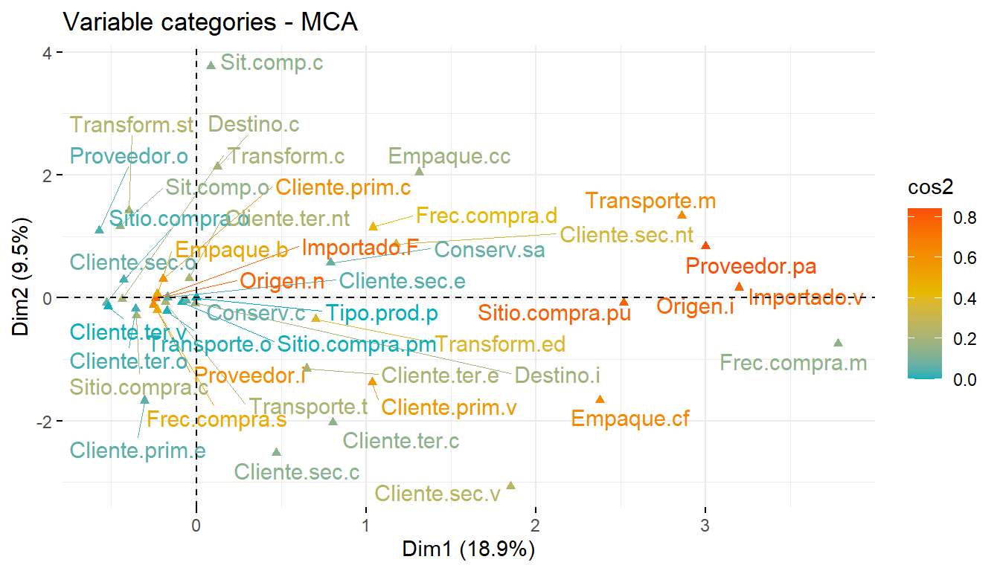

# Librerías requeridas
library(tidyverse)
library(xtable) # Importar y exportar
library(openxlsx) # exportar "*.xlsx"
library(readxl) # Importar y exportar
library(FactoMineR) # Para realizar el MCA
library(factoextra) # Para realizar el MCA
library(dplyr) # Para pasar variables a factor
Taller 6. Análisis de Correspondencias Múltiples - MCA
Objetivo de la actividad:
El siguiente ejercicio analizará los datos de un proyecto de SEPEC (2021), basado en 100 registros tomados aleatoriamente de encuestas realizadas a pescadores y comercializadores de diferentes especies de bagres en Colombia.
El objetivo de este ejercicio consiste en valorar la relación entre las variables categóricas producto de las encuestas y la información relacionada a la comercialización de los bagres censados. Se utilizará el siguiente archivo como base de datos: bagres.xlsx
Ejercicio tomado de: Rodríguez-Barrios (2023) Enlace del libro
Enlace de los archivos del libro
Procedimiento de la exploración
Análisis de Correspondencia múltiple (MCA). A partir de la muestra de 100 registros de bagres y de variables cualitativas o categóricas obtenidas mediante las encuestas realizadas, se identifican los siguientes elementos de los datos seleccionados:
• Individuos activos: Filas de la base de datos (100 registros de bagres).
• Variables activas: Variables categóricas que se utilizarán en el primer mca, que corresponden a las categóricas que han sido encuestadas.
• Variables cuantitativas suplementarias (quanti.sup): Son las variables cuantitativas que presenta la base de datos de bagres (venta en kg y precio de venta de los bagres).
• Variables cualitativas suplementarias (quali.sup): corresponden a las que se requieran analizar por separado, en este caso serán los nombres vernaculares de los bagres. Las variables cuantitativas y cualitativas suplementarias serán evaluadas al final del ejercicio con un mca adicional.
Más detalles de este procedimiento se pueden revisaar en el siguiente enlace: MCA - Multiple Correspondence Analysis in R
Librerías requeridas
Cargar o importar la base de datos
# Base de datos
bagres <- read_excel("bagres.xlsx") # paquete "readxl"
head(bagres)
str(bagres)
View(bagres)
1) Ajuste de la base de datos de bagres.
Para la realización del primer mca, que solo incluirá a las variables activas (excluye a las suplementarias), se escogerán solo las variables categóricas requeridas para este análisis (columnas 1, 9 a la 22).
# Base de variables activas
bagres <- read_excel("bagres.xlsx") # paquete "readxl"
datos.activos = bagres[,c(1,9:22)] # selección de columnas 1, 9 a 22
View(datos.activos)Al analizar la estructura de la base datos activos, a excepción de las columnas 4 y 5 (variables cuantitativas o cuantitativas suplementarias) Venta.kg y Precio.venta, el resto son de tipología caracter (chr) y se deben pasar a factores, para que el MCA pueda ejecutarse de forma apropiada. Es importante aclarar que las columnas 1 a la 4 no corresponden a variables activas, pero serán tabuladas en el siguiente data.frame.
# Cambiar todas las variables cualitativas a factor
datos.activos <- datos.activos %>%
mutate_all(factor) # Pasar a factores excepto variables 5 y 6
print(head(datos.activos))# A tibble: 6 × 15
...1 Importado Origen Destino Tipo.prod Proveedor Sit.comp Frec.compra
<fct> <fct> <fct> <fct> <fct> <fct> <fct> <fct>
1 1.Psdo Importado.F Origen.n Destino.i Tipo.pro… Proveedo… Sitio.c… Frec.compr…
2 2.Psdo Importado.F Origen.n Destino.i Tipo.pro… Proveedo… Sitio.c… Frec.compr…
3 3.Psdm Importado.F Origen.n Destino.i Tipo.pro… Proveedo… Sitio.c… Frec.compr…
4 4.Psdp Importado.F Origen.n Destino.i Tipo.pro… Proveedo… Sitio.c… Frec.compr…
5 5.Psdp Importado.v Origen.i Destino.i Tipo.pro… Proveedo… Sitio.c… Frec.compr…
6 6.Psdm Importado.F Origen.n Destino.i Tipo.pro… Proveedo… Sitio.c… Frec.compr…
# ℹ 7 more variables: Transform <fct>, Conserv <fct>, Empaque <fct>,
# Transporte <fct>, Cliente.prim. <fct>, Cliente.sec. <fct>,
# Cliente.ter. <fct>View(datos.activos)
2) Primera ordenación de las variables cualitativas activas (mca1).
Las variables consideradas para esta ordenación, son las cualitativas (tipo factor) que pueden ejercer un efecto en la comercialización de los bagres.
# 2) Ordenación de las variables acualitativas activas
# Las columnas 5 a 18 son las requeridas por el mca
str(datos.activos)tibble [100 × 15] (S3: tbl_df/tbl/data.frame)
$ ...1 : Factor w/ 100 levels "1.Psdo","10.Psdo",..: 1 13 24 35 46 57 68 79 90 2 ...
$ Importado : Factor w/ 2 levels "Importado.F",..: 1 1 1 1 2 1 1 1 1 1 ...
$ Origen : Factor w/ 2 levels "Origen.i","Origen.n": 2 2 2 2 1 2 2 2 2 2 ...
$ Destino : Factor w/ 2 levels "Destino.c","Destino.i": 2 2 2 2 2 2 2 2 2 2 ...
$ Tipo.prod : Factor w/ 1 level "Tipo.prod.p": 1 1 1 1 1 1 1 1 1 1 ...
$ Proveedor : Factor w/ 3 levels "Proveedor.i",..: 1 1 1 1 3 1 1 1 1 1 ...
$ Sit.comp : Factor w/ 6 levels "Sit.comp.c","Sit.comp.o",..: 3 3 3 3 6 3 3 3 4 4 ...
$ Frec.compra : Factor w/ 3 levels "Frec.compra.d",..: 3 3 1 3 3 3 3 3 3 3 ...
$ Transform : Factor w/ 3 levels "Transform.c",..: 2 2 2 1 2 1 2 1 1 1 ...
$ Conserv : Factor w/ 2 levels "Conserv.c","Conserv.sa": 1 1 1 1 1 1 1 1 1 1 ...
$ Empaque : Factor w/ 3 levels "Empaque.b","Empaque.cc",..: 1 1 1 1 3 1 1 1 1 1 ...
$ Transporte : Factor w/ 3 levels "Transporte.m",..: 3 3 2 3 3 3 3 2 3 3 ...
$ Cliente.prim.: Factor w/ 3 levels "Cliente.prim.c",..: 1 3 1 1 3 1 1 1 1 1 ...
$ Cliente.sec. : Factor w/ 5 levels "Cliente.sec.c",..: 2 2 2 4 3 4 2 2 2 2 ...
$ Cliente.ter. : Factor w/ 5 levels "Cliente.ter.c",..: 3 4 3 3 3 3 4 3 3 3 ...View(datos.activos[,c(2:15)])
mca1 <- MCA(datos.activos[,c(2:15)], graph = FALSE)
# summary(mca1)El anterior insumo es importante, porque define el orcentaje de varianza que capturan los 29 ejes canónicos - Eigenvalues y selecciona a las 10 variables de mayor relevancia para el análisis de ordenación - mca Categories (the 10 first) en los tres primeros ejes canónicos - Categorical variables (eta2).
2.1) Ajuste de la ordenación definida por los autovalores
A continuación se calcula el componente tabular, para identificar la varianza que captira cada eje canónico o Dim.i, en donde i es cada uno de los ejes de la ordenación.
# # Matriz de autovalores de los seis primeros ejes canónicos
head(mca1$eig) eigenvalue percentage of variance cumulative percentage of variance
dim 1 0.3909689 18.874360 18.87436
dim 2 0.1972939 9.524535 28.39889
dim 3 0.1720808 8.307348 36.70624
dim 4 0.1609039 7.767773 44.47401
dim 5 0.1387903 6.700220 51.17423
dim 6 0.1107851 5.348244 56.52248En la Figura 15.1, se grafican los resultados de la tabla anterior.
# Figura de autovalores (para la escogencia de variables)
x11()
fviz_screeplot(mca1, addlabels = TRUE, ylim = c(0, 20),
ylab = "% Varianza explicada", xlab = "Dimensiones",
col="steelblue")
2.2) Figuras generales del mca1
La Figura 15.2 muestra la relación de las 14 variables categoricas del análisis, el nivel de relación o cercanía es definido por la distancia chi cuadrado. fviz_mca_var representa a la grafica de variables, mca.cor muestra solo a las variables que más contribuyen a la ordenación, repel = TRUE permite visualizar los elementos sin solapamientos. ior.
# Figura de relación de las variables categóricas
x11()
fviz_mca_var(mca1, choice = "mca.cor", repel = TRUE,
ggtheme = theme_minimal())
La Figura 12.3 muestra el biplot integrado por los 100 registros de peces y las variables categóricas que los caracterizan. fviz_mca_biplot permite visualizar a las observaciones o filas de la base de datos (números en azul) y a las variables con mayor contribución al análisis (en rojo).
# Figura del Biplot de ordenación registros de peces y de variables
x11()
fviz_mca_biplot(mca1, choice = "mca.cor",repel = TRUE,
ggtheme = theme_minimal())
La Figura 13.1 define a l00 registros de peces con todas las variables activas y sus categorías (no incluye al comando “mca.cor”).
# Figura del Biplot de ordenación para registros de peces y categoricas de las variables
x11()
fviz_mca_biplot(mca1, repel = TRUE,
ggtheme = theme_minimal())
2.3) Figuras del mca con ponderaciones
A continuación se visualiza la ordenación de las observaciones (100 registros de peces) y su nivel de importancia (observaciones en rojo son las más importantes). fviz_mca_ind, permite visualizar a los individuos u observaciones (Figura 13.2).
# Contribuciones de las observaciones (filas de la la base de bagres)
x11()
fviz_mca_ind(mca1, col.ind = "cos2",
gradient.cols = c("#00AFBB", "#E7B800", "#FC4E07"),
repel = TRUE,
ggtheme = theme_minimal())
En la Figura 12.6 se muestra la ordenación de las variables activas y su nivel de contribución (variables en rojo son las más importantes).
# Contribuciones de las variables categóricas (columnas de variables activas)
x11()
fviz_mca_var(mca1, col.var = "cos2",
gradient.cols = c("#00AFBB", "#E7B800", "#FC4E07"),
repel = TRUE, ggtheme = theme_minimal())
3) Segunda ordenación de las variables cualitativas activas (mca2).
A continuación se realiza un mca con dos elementos adicionales a a las variables activas ordenadas anteriormente:
Variables cuantitativas suplementarias (quanti.sup), correspondientes a la venta en kilogramos y el precio de venta de los bagres.
Variables cualitativas suplementarias (quali.sup), representadas por los nombres o tipos de bagres (columna: Nombre.vernacular)
Esto con el objetivo de visualizar aspectos asociados a la comercialización de los bagres (variables cuantitativas y tipos de bagres), en respuesta a las variables categóricas producto de las encuestas (variables activas).
Paso 1. Incluir los nombres de los bagres a la base “datos.activos” (datos.activos.2)
# Pasar nombres de los bagres a factor
bagres <- read_excel("bagres.xlsx") # paquete "readxl"
bagres$Nombre.vernacular = as.factor(bagres$Nombre.vernacular)
# Crear data frame con los nombres de los bagres y variables cuantitativas.
datos.activos.1 <- data.frame(bagres = bagres[,6],
venta.kg = bagres[,7],
Precio.venta = bagres[,8],
datos.activos[,2:15])
str(datos.activos.1)'data.frame': 100 obs. of 17 variables:
$ Nombre.vernacular: Factor w/ 4 levels "B.Ray.o.Tigr",..: 4 4 3 2 2 2 2 4 4 4 ...
$ Venta.kg : num 150 1000 150 50 2200 20 30 20 50 35 ...
$ Precio.venta : num 18000 14000 16000 19000 13000 24000 24000 22000 22000 18000 ...
$ Importado : Factor w/ 2 levels "Importado.F",..: 1 1 1 1 2 1 1 1 1 1 ...
$ Origen : Factor w/ 2 levels "Origen.i","Origen.n": 2 2 2 2 1 2 2 2 2 2 ...
$ Destino : Factor w/ 2 levels "Destino.c","Destino.i": 2 2 2 2 2 2 2 2 2 2 ...
$ Tipo.prod : Factor w/ 1 level "Tipo.prod.p": 1 1 1 1 1 1 1 1 1 1 ...
$ Proveedor : Factor w/ 3 levels "Proveedor.i",..: 1 1 1 1 3 1 1 1 1 1 ...
$ Sit.comp : Factor w/ 6 levels "Sit.comp.c","Sit.comp.o",..: 3 3 3 3 6 3 3 3 4 4 ...
$ Frec.compra : Factor w/ 3 levels "Frec.compra.d",..: 3 3 1 3 3 3 3 3 3 3 ...
$ Transform : Factor w/ 3 levels "Transform.c",..: 2 2 2 1 2 1 2 1 1 1 ...
$ Conserv : Factor w/ 2 levels "Conserv.c","Conserv.sa": 1 1 1 1 1 1 1 1 1 1 ...
$ Empaque : Factor w/ 3 levels "Empaque.b","Empaque.cc",..: 1 1 1 1 3 1 1 1 1 1 ...
$ Transporte : Factor w/ 3 levels "Transporte.m",..: 3 3 2 3 3 3 3 2 3 3 ...
$ Cliente.prim. : Factor w/ 3 levels "Cliente.prim.c",..: 1 3 1 1 3 1 1 1 1 1 ...
$ Cliente.sec. : Factor w/ 5 levels "Cliente.sec.c",..: 2 2 2 4 3 4 2 2 2 2 ...
$ Cliente.ter. : Factor w/ 5 levels "Cliente.ter.c",..: 3 4 3 3 3 3 4 3 3 3 ...Paso 2. Nuevo mca, que incluye a las variables suplementarias (quali.sup y quanti.sup)
# mca con nombres de los bagres (quali.sup) y variables cuantitativas (cuanti sub)
mca2 <- MCA (datos.activos.1,
quali.sup = 1, # Registros de peces (X)
quanti.sup = 2:3, # 2 y 3 son Variables cuantitativas
graph=FALSE) Paso 3. Gráfica de las variables cuantitativas suplementarias (quanti.sup) (Figura 12.7).
# Figura de las variables suplementarias (azul) y las activas (rojo)
x11()
fviz_mca_var(mca2,
choice = "mca.cor", # Principales variables cualitativas
repel = TRUE) # Quita el solapamiento de las variables.
Paso 4. Grafica de las variables cualitativas suplementarias (quali.sup) (Figura 12.8)
# Figura de las variables suplementarias (verde), las activas (rojo) y los individuos (azul)
x11()
fviz_mca_biplot(mca2, repel = TRUE,
geom.ind = c("n", "n"), # No mostrar a los individuos
ggtheme = theme_bw()) # Puede usar temas de "ggplot2" 
La Figura 12.9 muestra las elipses que representan a los intervalos de confianza de cada grupo de bagres, para medir el tipo de relación o de colapamiento entre estos, basado en las variables activas que los caracterizan.
# Elipses por cada tipo de bagre
x11()
fviz_ellipses(mca2, "Nombre.vernacular",
geom = "text", repel = TRUE)
Taller de entrenamiento
Objetivo: Poner en práctica los conceptos vistos en este taller, realizando las siguientes opciones realizando un MCA con las variables biológicas (taxones). Enviar los resultados al Teams del profesor.